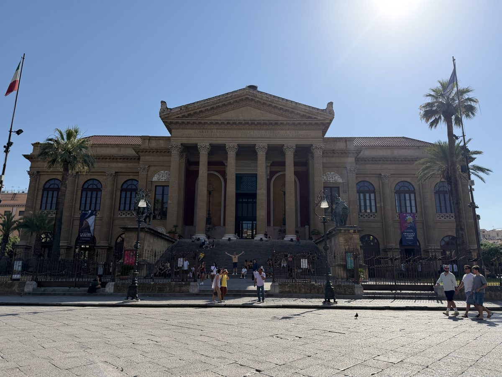

No app. No group. No booking. Walk through 2,700 years of Arab, Norman, and Baroque history. Opera houses, ancient markets, and the most layered city in the Mediterranean. First 3 stops free.
From the opera house to the cathedral, through markets and mosques and Baroque churches and Norman palaces. Under three kilometres. Two thousand seven hundred years.
Enjoyed this tour?
Try Rome
From the Pantheon to the Colosseum. Nine stops through the ancient city, from the Republic to the Empire to the Renaissance popes who rebuilt it all.
Start Rome TourYou've seen what this tour is like. The next 7 stops go further. €4.99, yours to keep forever.
Unlock Full Tour - €4.99Payments powered by Lemon Squeezy & Stripe